3
Virtuoso Visualization and Analysis XL Table
Virtuoso Visualization and Analysis XL Table (hereinafter referred to as Table) displays data for the selected traces or signals in a table for quick analysis.
The graphical user interface (GUI) of the Table consists of a menu bar, a toolbar, and a status bar. The following figure shows GUI of the Table.
To view signal names or expression for traces, right-click the Table toolbar or the status bar and choose Signals/Expressions. The Signal/Expressions window appears on the left, displaying the signal names or expressions for which data is displayed in the Table.
Related Topics
Opening the Virtuoso Visualization and Analysis XL Table
Menu Bar of the Table
The following table described the menu options available in the menu bar of the Virtuoso Visualization and Analysis XL Table.
Related Topics
Virtuoso Visualization and Analysis XL Table
Opening the Virtuoso Visualization and Analysis XL Table
Exporting Contents of the Table
Printing Contents of the Table
Revealing Columns in the Table
Transposing Rows and Columns of the Table
Formatting Attributes of the Table
Toolbar of the Table
The following table describes the commands that are available in the toolbar of the Virtuoso Visualization and Analysis XL Table.
Related Topics
Virtuoso Visualization and Analysis XL Table
Opening the Virtuoso Visualization and Analysis XL Table
Saving Table Contents to a CSV File
Printing Contents of the Table
Limiting the Number of Actions to Undo or Redo
Opening the Virtuoso Visualization and Analysis XL Table
You can open the Virtuoso Visualization and Analysis XL Table in any of the following ways:
- Opening the Table from the Results Browser
- Opening the Table from the Graph Window
- Opening Table from the Calculator
Opening the Table from the Results Browser
To open the Table from the Results Browser:
-
In the Results Browser, select the signal whose waveform data you want to display in the Table. Hold down the
Ctrlkey to select multiple signals. -
From the toolbar of the Results Browser, click Send to Table
.
Alternatively, right-click the selected signals in the Results Browser and then choose Table.
The Virtuoso Visualization and Analysis XL Table opens, displaying data points of the selected signals.
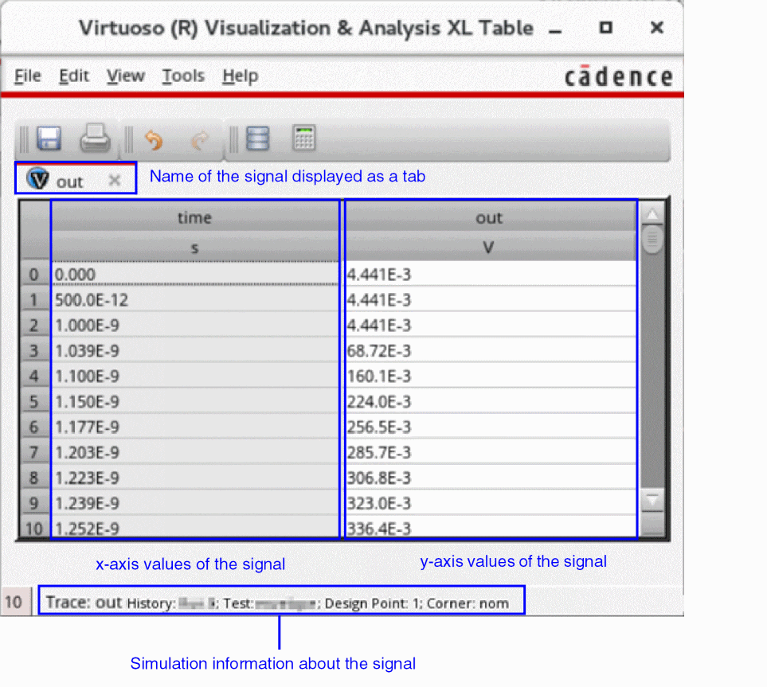The default order of the columns displayed in the Table is as follows:
Opening the Table from the Graph Window
To open the Table from the graph window:
- Select a trace in the trace legend area of the graph window.
- Right-click a trace and point to Send To – Table and then choose one of the following options:
The trace containing parametric sweep data displays waveform data for each sweep variable value in separate columns of the Table. The sweep variables are displayed as headers.
The following figure shows waveform data for the trace out that contains parametric sweep data for sweep variables temp and vdd. These sweep variables are also displayed as headers.
Opening Table from the Calculator
You can send the following from Calculator to the Table:
To send an expression to the Table from the Calculator:
-
Type an expression in the Calculator Buffer.
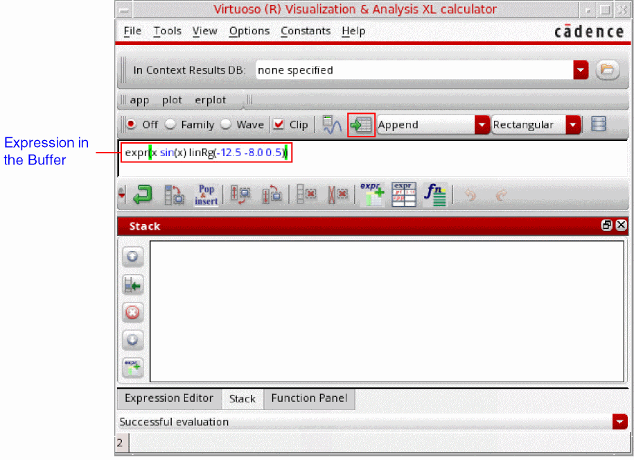 -
From the menu bar of the Calculator, choose Tools – Table.
Alternatively, click the icon in the Selection toolbar of the Calculator.
The Virtuoso Visualization and Analysis Calculator opens, displaying expression data.
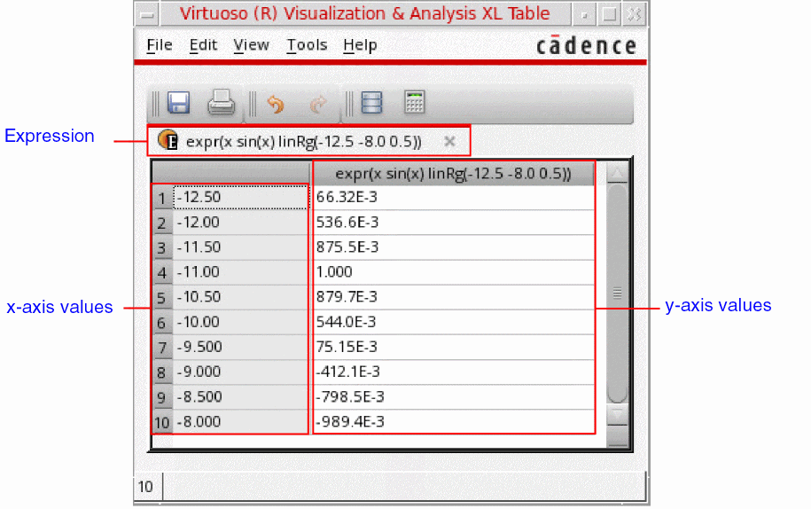
To send a signal from Calculator to the Table:
-
Send the output signal to the Calculator from the Results Browser or from the graph window.
The signal is displayed in the Buffer of the Calculator.
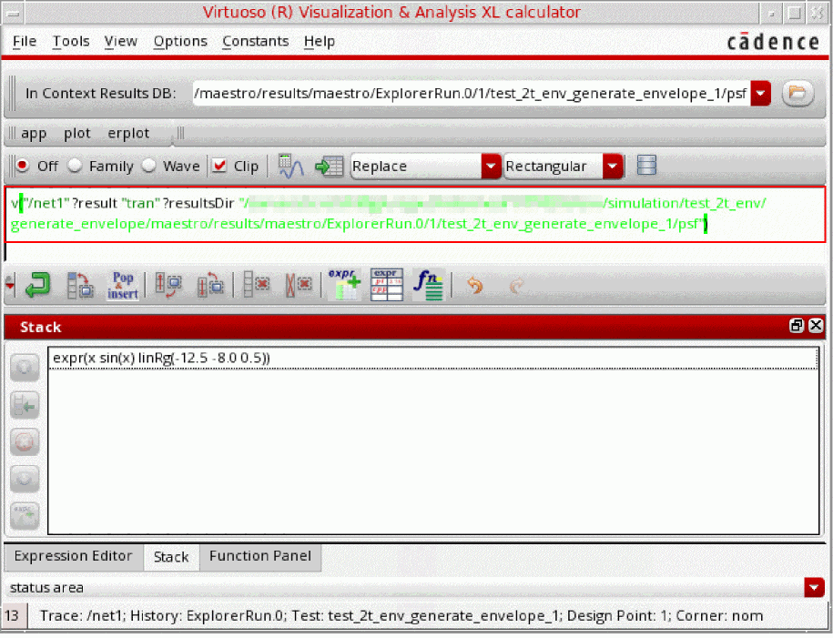 -
From the menu bar of the Calculator, choose Tools – Table.
Alternatively, click the icon in the Selection toolbar of the Calculator.
The Virtuoso Visualization and Analysis Calculator opens, displaying waveform data of the signal.
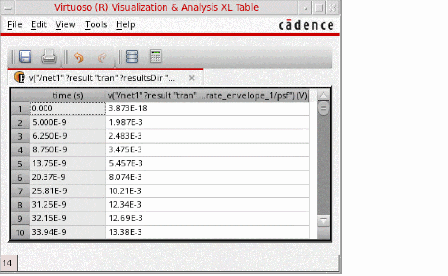
Related Topics
Virtuoso Visualization and Analysis XL Table
Saving Table Contents to a CSV File
To save the contents of the Table to a CSV file:
-
From the File toolbar, click Save as CSV
 .
. -
The Save as CSV form opens.
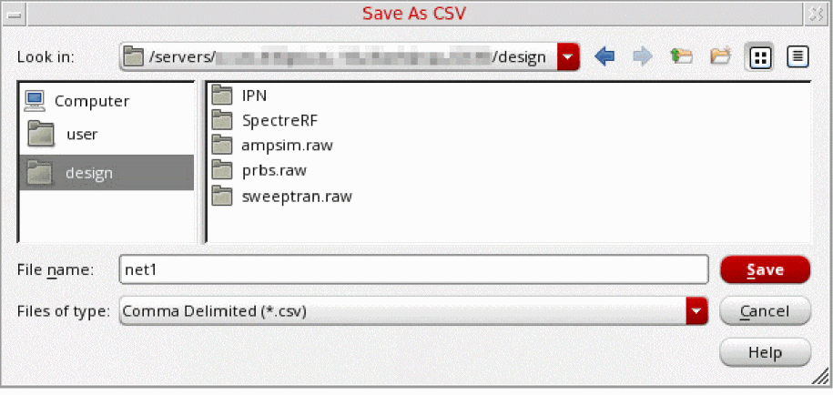 - In the Look in field, select the directory where you want to save the CSV file.
- In the File name field, enter the name of the CSV file to which you want to save the contents of the Table.
-
Click Save.
The contents of the Table are saved in the specified CSV file.
Related Topics
Virtuoso Visualization and Analysis XL Table
Exporting Contents of the Table
You can export the contents of the Virtuoso Visualization and Analysis XL Table in various formats that you can use later.
To export the contents of the Table:
-
From the menu bar of the Table, choose File – Export.
The Export Waveforms form opens.
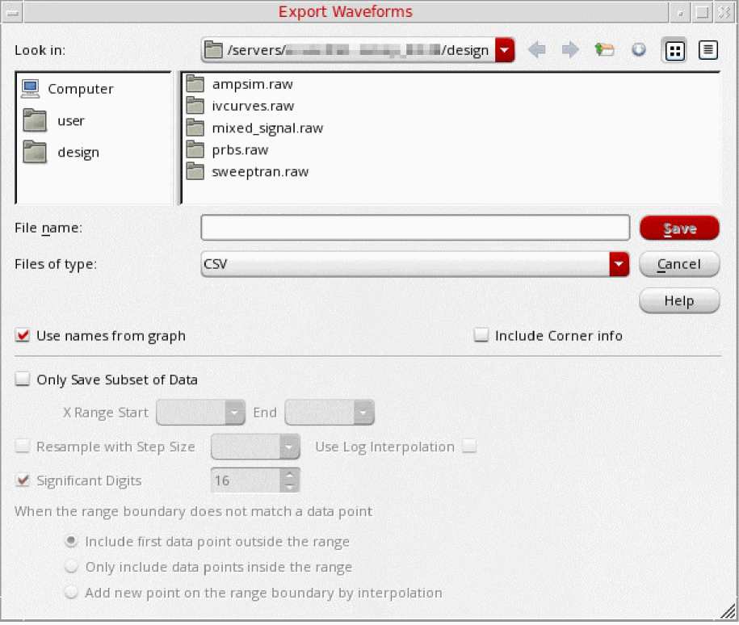 - In the File name field, type the name of the file to which you want to export the selected waveforms.
- From the Files of type drop-down list, select one of the following formats: VCSV, Matlab, PSF, SPECTRE, SST2, CSV, or PSFXL.
- Select the Use names from graph check box to use the trace names that are displayed on the graph.
-
If you are exporting signals in the CSV format, select the Include Corner info check box to print the corner information in the header of the CSV file.
The Include Corner info check box appears dimmed and becomes available only if CSV is selected from the Files of type drop-down list. - Select the Only Save Subset of Data check box to export only the required part of the waveform or signal.
- In the X Range Start and End fields, specify the start and the end points of the x range for which you want to export the waveform.
- Select the Resample with Step Size check box to specify the step size to resample the exported data based on linear interpolation. The greater the step size, the fewer data points in the exported data.
- Select the Use Log Interpolation check box to use the logarithmic scale for interpolation.
- In the Significant Digits field, specify the number of significant digits in the exported values from waveform data.
-
From the When the range boundary does not match a data point options, select one of the following:
- Include first data point outside the range: Includes the first data point that immediately falls before the specified X Range Start value and the last data point that falls immediately after the specified X Range End value when there are no actual data points corresponding to the specified X Range Start and End values
- Only include data points inside the range: Includes only actual data points inside the specified x range.
- Add new point on the range boundary by interpolation: Includes the interpolated values for the specified range boundary (X Range Start and End values) when there are no actual data points corresponding to the specified X Range Start and End values.
- Click Save.
Waveform data is exported to a file in the specified format.
Related Topics
Virtuoso Visualization and Analysis XL Table
Opening the Virtuoso Visualization and Analysis XL Table
Hiding Columns in the Table
To hide a column in the Virtuoso Visualization and Analysis XL Table:
-
Click a column to select it. Hold down the
Ctrlkey to select multiple columns. -
From the menu bar of the Table, choose View – Hide.
Alternatively, right-click the selected columns and choose Hide Column.
The selected columns are hidden from the Table.
Related Topics
Virtuoso Visualization and Analysis XL Table
Opening the Virtuoso Visualization and Analysis XL Table
Revealing Columns in the Table
To reveal a hidden column in the Virtuoso Visualization and Analysis XL Table:
-
From the menu bar of the Table, choose View – Reveal.
Alternatively, right-click anywhere inside the Table and choose Reveal Column.
The Reveal Columns form opens, displaying numbers and names of the columns that are currently hidden in the Table.
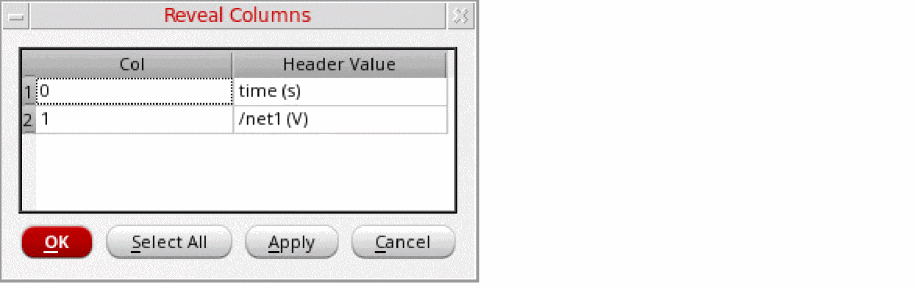The Reveal and Reveal Column commands are not available if there are no hidden columns in the Table. -
In the Reveal Columns form, click the row for the column that you want to reveal. Hold down the
Ctrlkey to select multiple rows.
If you want to reveal all hidden columns, click Select All. -
Click Apply or click OK.
The selected hidden columns are revealed again in the Table.
Related Topics
Virtuoso Visualization and Analysis XL Table
Opening the Virtuoso Visualization and Analysis XL Table
Formatting Attributes of the Table
To format attributes of cells and headers of the Virtuoso Visualization and Analysis XL Table:
-
Click a column to select it. Hold down the
Ctrlkey to select multiple columns. -
From the menu bar of the Table, choose View – Format.
Alternatively, right-click the selected columns and choose Format.
The Format Attributes form opens.
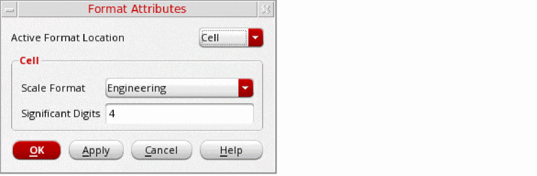 - From the Active Format Location drop-down list, select one of the following options:
-
From the Scale Format drop-down list, select one of the following options:
-
Scientific: To change the notation of values to scientific. For example:
1.234E-8.
This notation is not available if Header is selected in the Active Format Location drop-down list. -
Engineering: To change the notation of values to engineering. For example:
12.34E-9. -
Suffix: To change the notation of values to suffix. For example:
12.34n.
-
Scientific: To change the notation of values to scientific. For example:
-
From the Scale Factor drop-down list, select the units to which you want to convert values in the Table. The units displayed in the Scale Factor drop-down list depends on the selected scale format.
The Scale Factor field is available only when Header is selected in the Active Format Location drop-down list. - In the Significant Digits field, specify the number of significant digits to be displayed for data.
- Click Apply or click OK.
Related Topics
Virtuoso Visualization and Analysis XL Table
Opening the Virtuoso Visualization and Analysis XL Table
Sorting Columns in the Table
When you sort a column the first time, values in the column are sorted in an ascending order. If you sort the same column again, values in the column are sorted in the descending order.
To sort a column in the Table:
- Click to select the column in which you want to sort the values.
-
From the menu bar of the Table, choose View – Sort.
Alternatively, right-click the column you want to sort and choose Sort.
The values in the columns are sorted either in the ascending or descending order.
When a column is sorted, an arrow key appears at the column header. The direction of the arrow key indicates whether the values are currently sorted in the ascending or descending order. The key indicates that values in the column are sorted in the ascending order. The key indicates that values in the column are sorted in the descending order.
You can click this arrow key to change the sorting order of the column.
Related Topics
Virtuoso Visualization and Analysis XL Table
Opening the Virtuoso Visualization and Analysis XL Table
Transposing Rows and Columns of the Table
To transpose rows into columns and column into rows:
-
From the menu bar of the Table, choose View – Transpose.
Alternatively, right-click anywhere inside the Table and choose Transpose.
The rows and columns of the Table are interchanged.
Related Topics
Virtuoso Visualization and Analysis XL Table
Opening the Virtuoso Visualization and Analysis XL Table
Merging X-Axis Data in a Single Column
You can merge two or more columns that contain similar x-axis data in a single column.
The merged column includes x-axis values from all columns being merged. The corresponding y-axis values are either interpolated or extrapolated.
To merge columns that contain similar x-axis data:
-
Hold down the
Ctrlkey and click the columns that you want to merge. -
Right-click the Selected columns and choose one of the following options:
- Merge X: To merge only the selected columns that contain similar x-axis data.
- Merge All X: To merge all columns that contain similar x-axis data.
The columns that contain similar x-axis data are merged into a single column.
- If you try to merge columns that do not contain similar x-axis data, for example one column contains time values and another column contains frequency values, a dialog box appears indicating the error.
- The Merge X and Merge All X options are available only when there are more than one column that contain similar x-axis data.
Related Topics
Virtuoso Visualization and Analysis XL Table
Opening the Virtuoso Visualization and Analysis XL Table
Changing Column Colors in the Table
To change the color of a column in the table:
-
Select the column whose color you want to change. Hold down the
Ctrlkey to select multiple columns in the Table. -
Right-click the selected columns and point to Change Column Color and then choose the color you want to set to the columns.
The selected color is applied to the columns.
Related Topics
Virtuoso Visualization and Analysis XL Table
Opening the Virtuoso Visualization and Analysis XL Table
Renaming Column and Row Headers of the Table
To rename the header of a column or row of the Table:
- Click a column or row whose header name you want to change.
-
Right-click the selected column or row and choose Rename Header.
The Rename Header form opens. - Enter the new name of the header of the column or row.
- Click Apply and click OK.
Related Topics
Virtuoso Visualization and Analysis XL Table
Opening the Virtuoso Visualization and Analysis XL Table
Limiting the Number of Actions to Undo or Redo
You can specify the number of actions that can be undone or redone in the Virtuoso Visualization and Analysis XL Table:
To specify the number of actions that can be undone or redone:
-
From the menu bar of the Table, choose Edit – Preferences.
The Preferences for opens. -
In the Limit Undo Actions field, specify the number of actions that can be undone and redone. The valid values are from
1–10.
For example, if you set3in this field, you can undo up to last3actions performed in the Table. - Click OK.
Related Topics
Virtuoso Visualization and Analysis XL Table
Opening the Virtuoso Visualization and Analysis XL Table
Filtering Table Data
You can apply filters to columns containing x-axis data to selectively view data that match the filter pattern.
- Select a column that contains x-axis data.
-
Right-click the selected column and choose one of the following options:
- Apply Range: In the Apply Range form, specify the start and end values of the range within which you want to view x-axis and corresponding y-axis data.
- Value At: In the Value At form, specify the x-axis value corresponding to which you want to view the y-axis value. If the specified x-axis value does not match a data point, the corresponding y-axis value is obtained using either interpolation or extrapolation.
-
Sample Values: Filters data that match the sample values specified in the Sample Values form. To specify the sample values:
-
In the Start field, specify the starting value of the sample. For example:
1e-9. -
In the End field, specify the end value of the sample. For example,
9e-9. -
In the Step field, specify the step value. For example,
2e-9. -
Select the Log check box to include logarithmic values.
Do not specify the step size in the Step field when the Log check box is selected. -
Click OK.
The x-axis data and the corresponding y-axis data is filtered according to the specified sample values: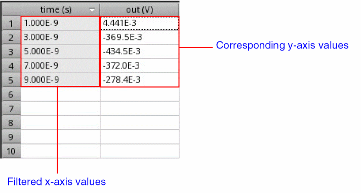
-
In the Start field, specify the starting value of the sample. For example:
Related Topics
Virtuoso Visualization and Analysis XL Table
Opening the Virtuoso Visualization and Analysis XL Table
Changing the Format of Complex Data in the Table
To change the format of complex data displayed in the Table:
-
Select the column that contain complex data. Hold down the
Ctrlkey to select multiple columns. - Right-click the selected columns and point to Display Complex As, and choose one of the following options:
Related Topics
Virtuoso Visualization and Analysis XL Table
Opening the Virtuoso Visualization and Analysis XL Table
Resizing Columns and Rows of the Table
To resize a column in the Virtuoso Visualization and Analysis XL Table:
- Drag the right edge of a column header to the left or to the right to make the column narrower or wider, respectively.
To resize a row in the Virtuoso Visualization and Analysis XL Table:
-
Drag the bottom edge of a row in the first column to downward or upward to make the row narrower or wider, respectively.
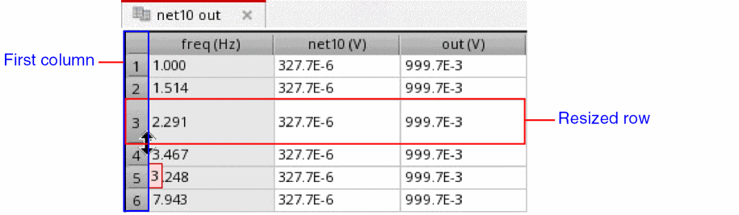
To resize column widths to fit the contents:
To reset the column width and row height to their default values:
Related Topics
Virtuoso Visualization and Analysis XL Table
Opening the Virtuoso Visualization and Analysis XL Table
Printing Contents of the Table
To print the contents of the Virtuoso Visualization and Analysis XL Table:
-
From the menu bar of the Table, choose File – Print.
Alternatively, from the File toolbar, click Print .
The Print form opens, displaying the name, location, and type of the default printer.
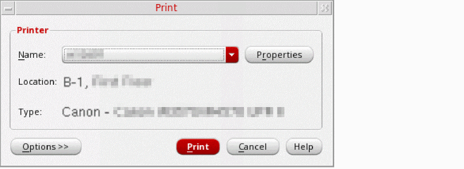 - In the Printer group box, do the following:
-
Click Options to display additional options in the form.
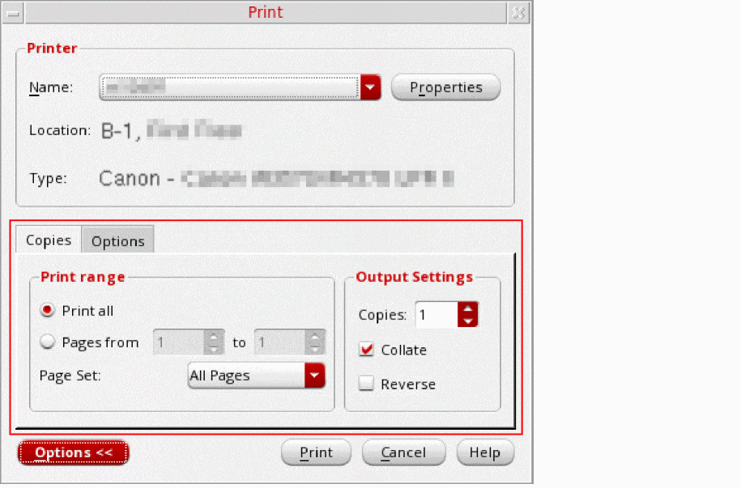 - In the Copies tab, specify the following options:
- Click the Options tab and specify the following options:
- Click Print to print the contents of the Table.
Related Topics
Virtuoso Visualization and Analysis XL Table
Opening the Virtuoso Visualization and Analysis XL Table
Setting Printer Properties
To set the properties of the printer:
-
From the menu bar of the Table, choose File – Print.
Alternatively, from the File toolbar, click Print .
.
The Print form opens, displaying the name, location, and type of the default printer.
-
In the Printer group box, click Properties to configure page properties and job options.
The Printer Properties form opens.
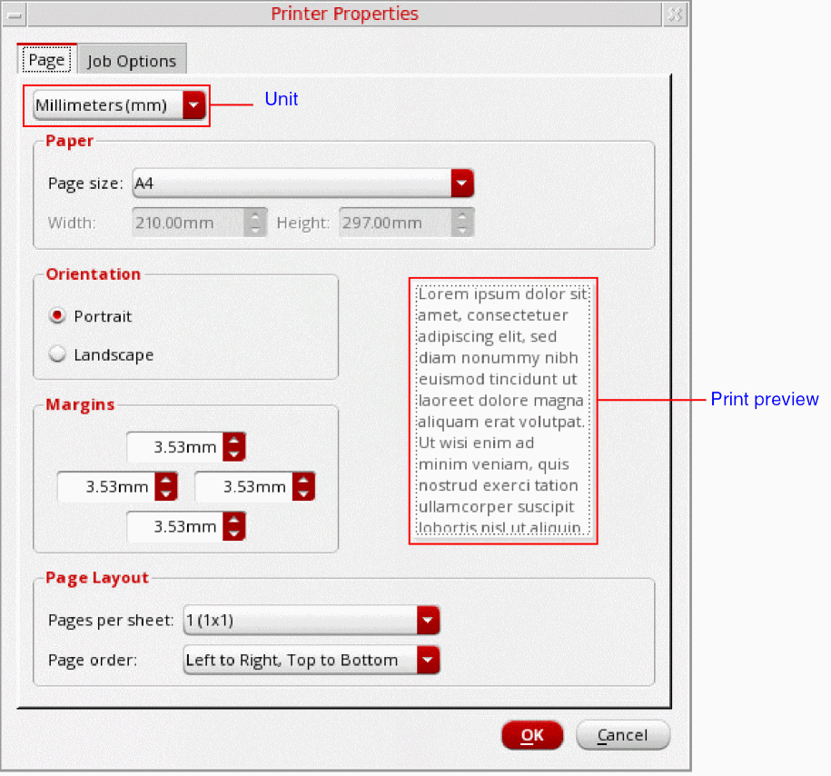 -
On the Page tab, specify the following options:
- From the Unit drop-down list, select the unit of measurement for page settings.
- In the Paper group box, select the size of the paper from the Page size drop-down list.
- From the Orientation options, select either Portrait or Landscape.
- In the Margins group box, select the top, left, right, and bottom margins.
- In the Page Layout group box, select how many pages you want to print per sheet from the Pages per sheet drop-down list. You can also control the order in which pages are printed from the Page order drop-down list. By default, pages are printed from left to right and then from top to bottom.
-
Click the Job Options tab and specify the following options:
- In the Job Control group box, from the Scheduled printing drop-down list, choose when do you want to schedule the printing job. You can also specify the billing information and the job priority in the respective fields.
- In the Banner Pages group box, from the Start and End drop-down lists, select the level of the information sensitivity that you want to print at the start and the end of the banner page, respectively.
- Click OK to save the printer properties.
Related Topics
Printing Contents of the Table
Virtuoso Visualization and Analysis XL Table
Opening the Virtuoso Visualization and Analysis XL Table
Return to top